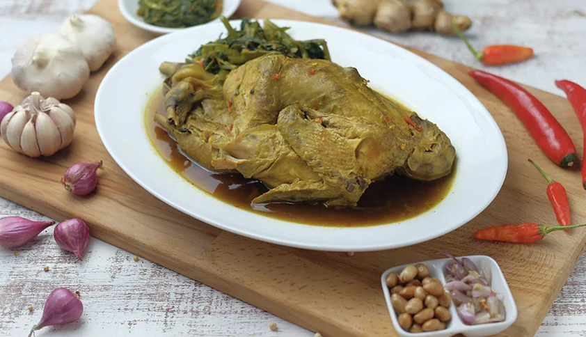
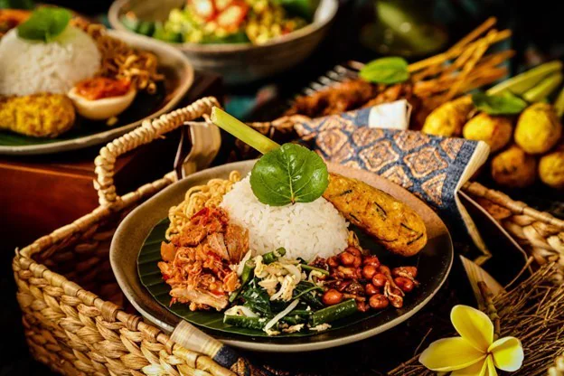
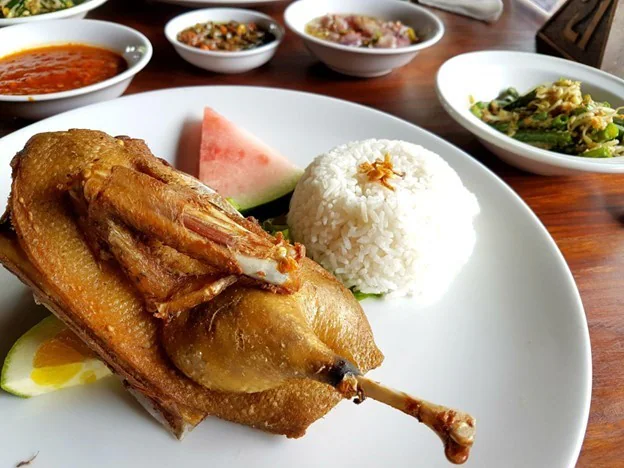

Ayam Bututu
Click Show More untuk Informasi selanjutnya

Nasi Cambur Bali
Click Show More untuk Informasi selanjutnya

Bebek Bengil
Click Show More untuk Informasi selanjutnya

Tipat Contok
Click Show More untuk Informasi selanjutnya

Bulung Benih Kuah Pindang
Click Show More untuk Informasi selanjutnya

Sate Plecing
Click Show More untuk Informasi selanjutnya